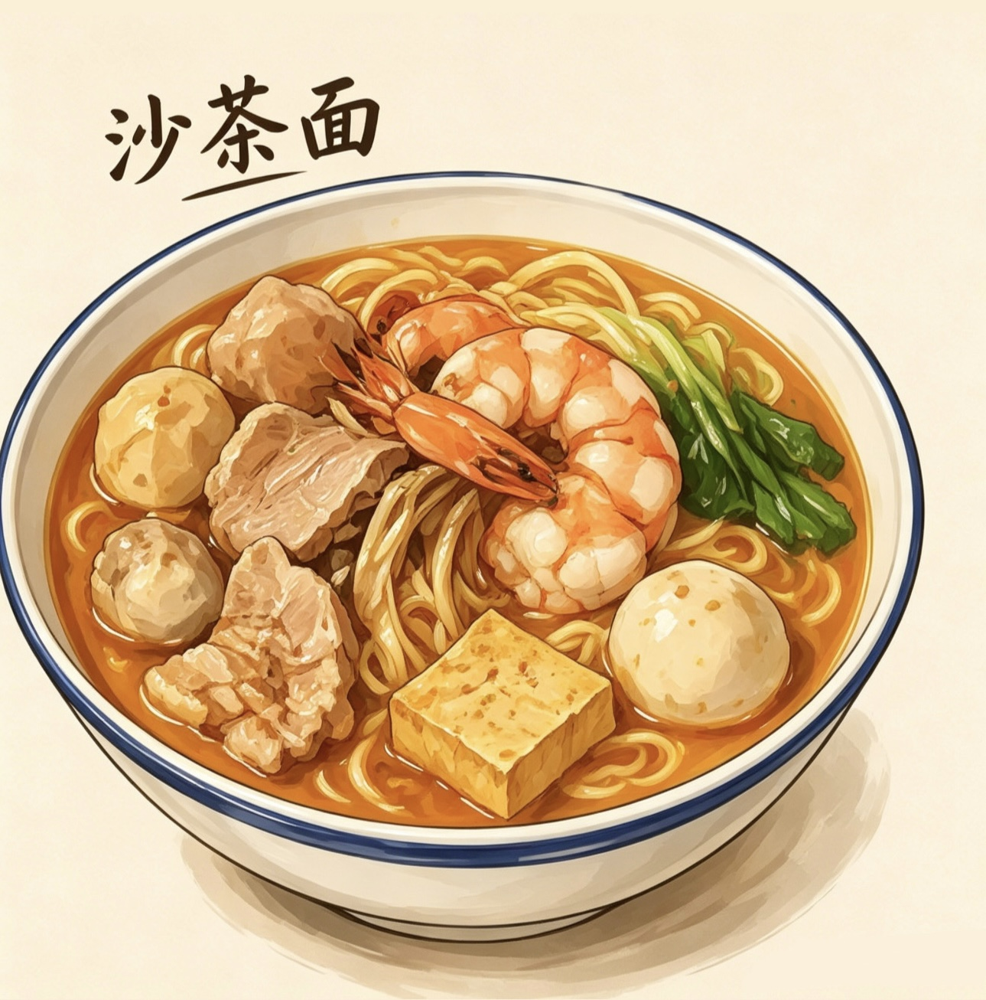
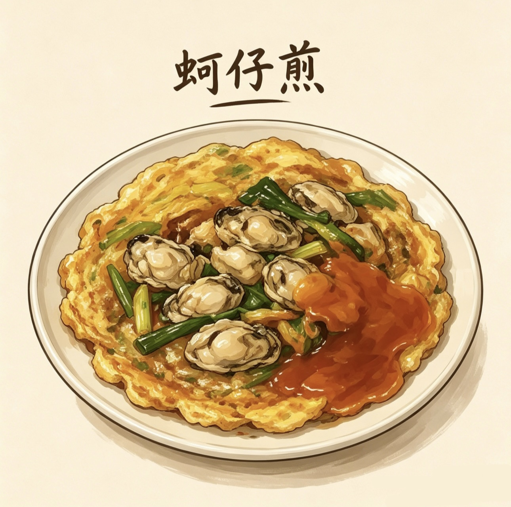
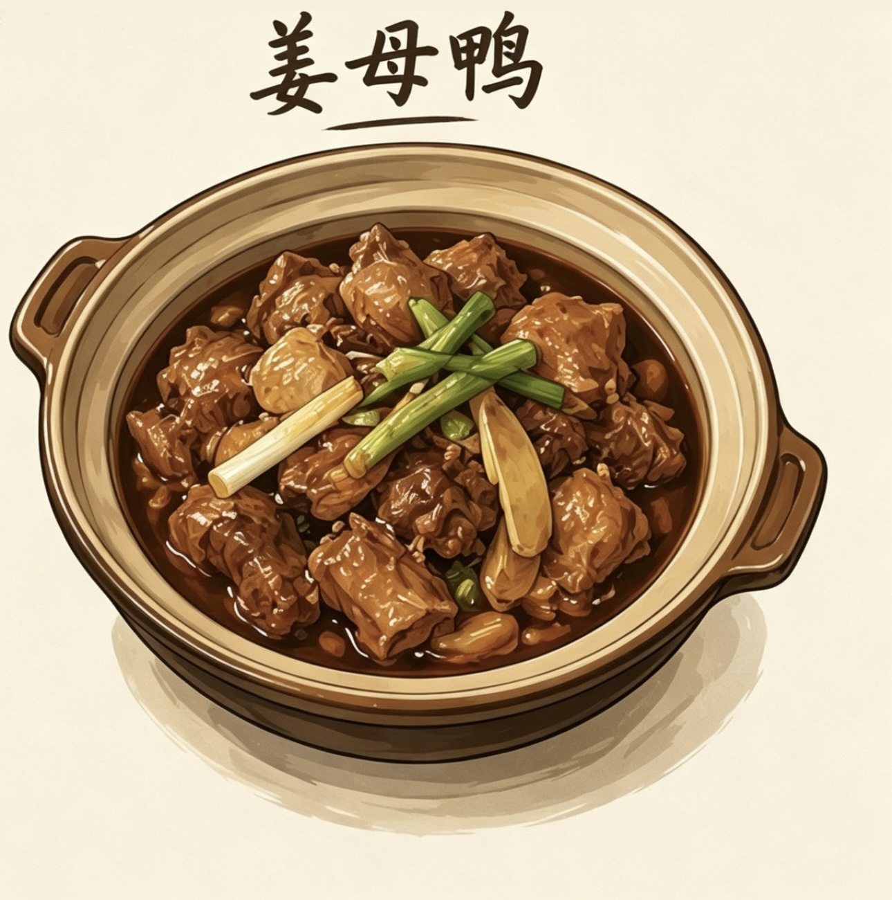
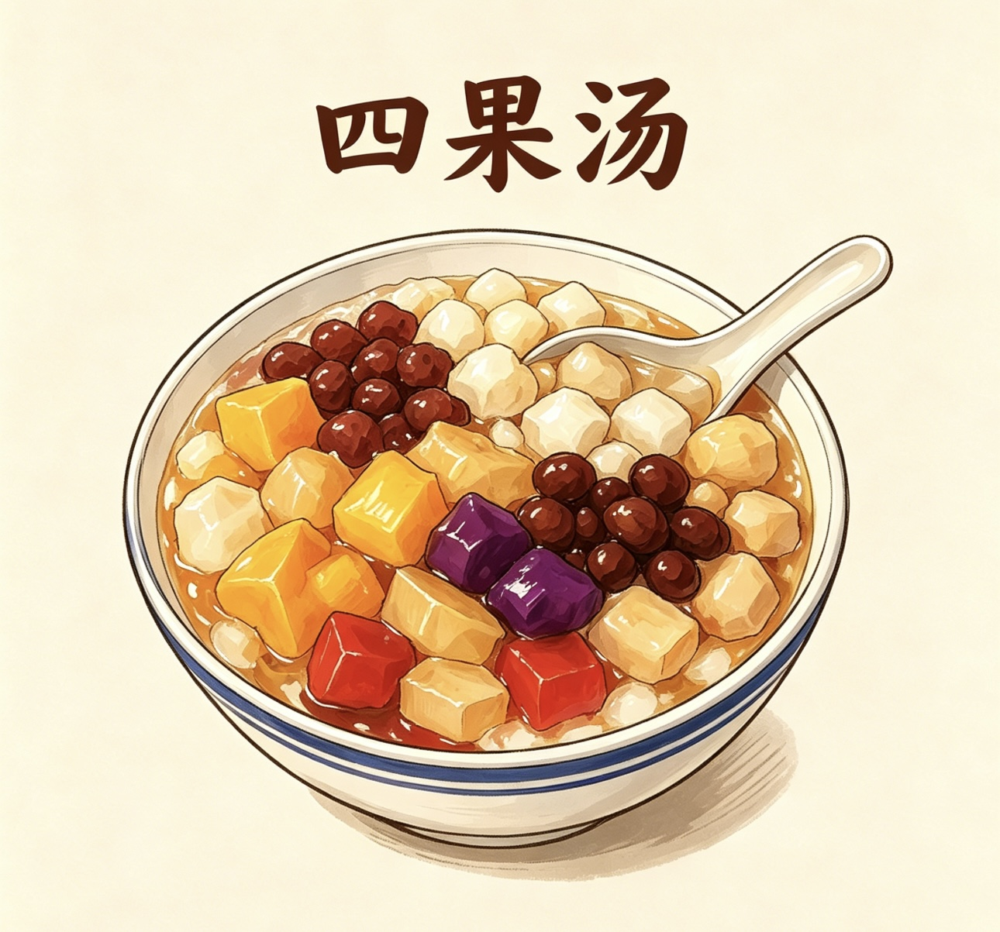
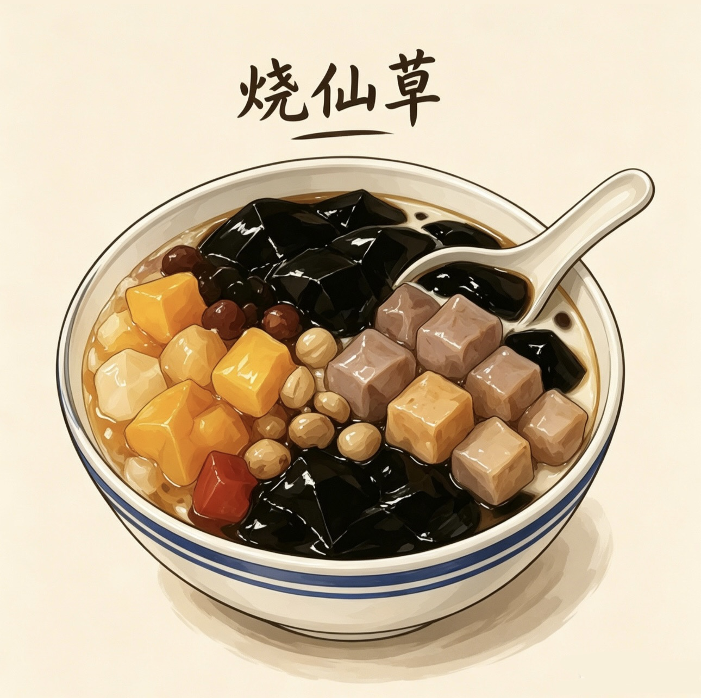

◆
Местные деликатесы

Лапша в соусе шача
Лапша подаётся в густом ароматном бульоне с соусом шача, который готовят из арахиса, сушёной рыбы, специй и креветочной пасты. Обычно добавляют креветки, кальмаров, тофу, мясо или рыбные шарики. Вкус одновременно ореховый, солоноватый и слегка острый.

Омлет с устрицами
Устрицы смешивают с яйцом и бататовым крахмалом, благодаря чему получается необычная тягучая текстура.

Утка с имбирём
Утку долго тушат с большим количеством имбиря, рисовым вином и соевым соусом.

Фруктовый десерт
Холодный десерт из льда, фруктов, желе, фасоли и сиропа.

Десерт из травяного желе
Популярный десерт из травяного желе с фасолью, арахисом, таро и сгущённым молоком.